The Makarska Riviera is more than a place to rest — it's a playground for the curious and the active. From the crystal-clear Adriatic to the rugged peaks of the Biokovo mountains, every day holds a new adventure waiting just outside your pitch.
Cycle along the coastal path with the sea on one side and fragrant pine forests on the other. Marked cycling routes connect the campsite to the nearby towns of Baška Voda and Brela. Bikes can be rented at the campsite or locally. For those who want more of a challenge, mountain bike trails lead up towards the lower slopes of Biokovo.
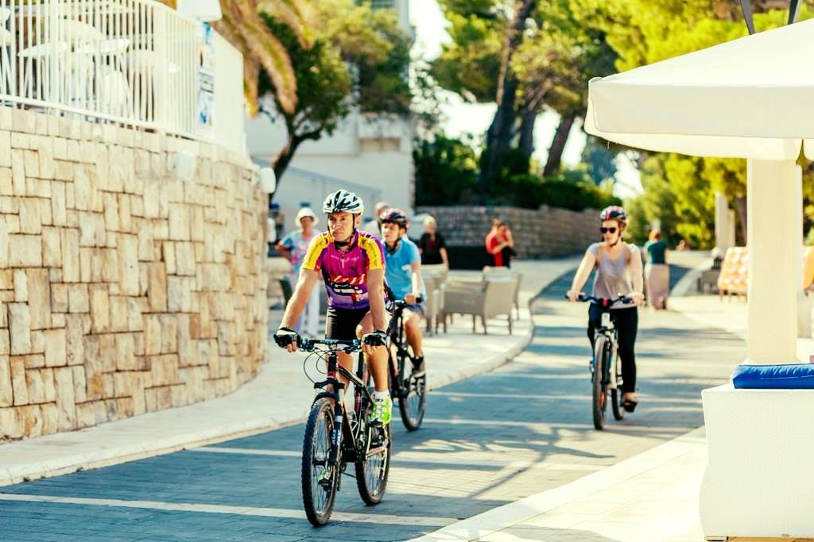
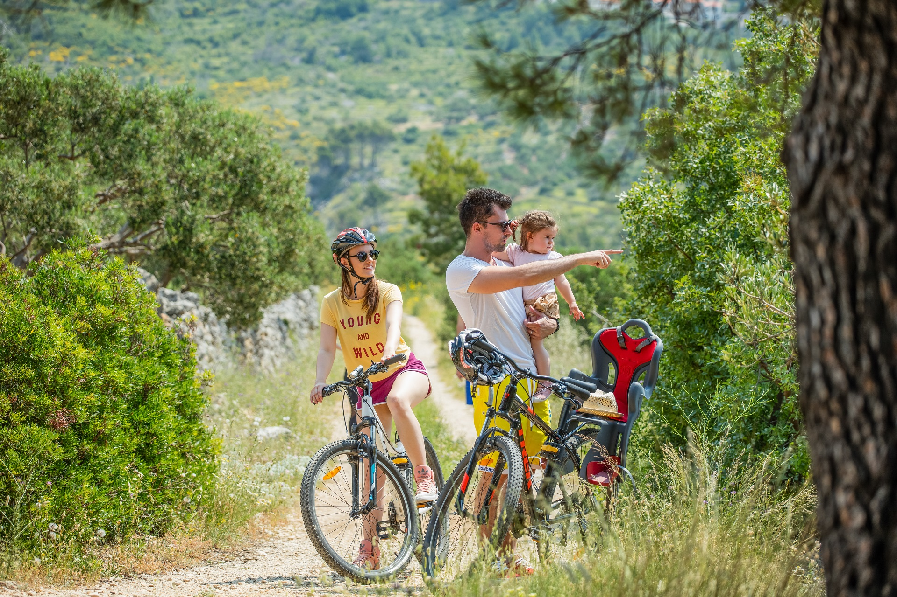
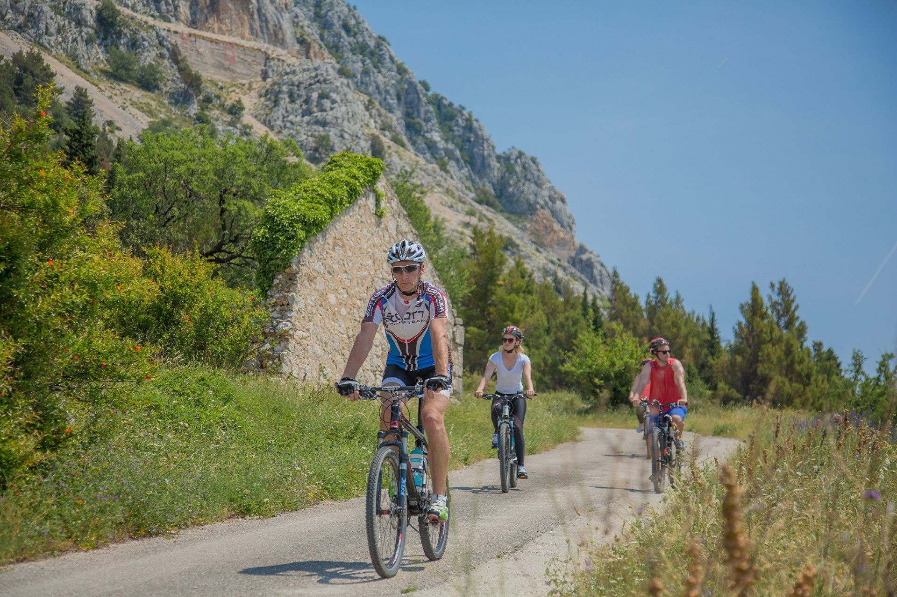
The Adriatic around Makarska is exceptionally clear and rich with marine life — sea urchins, octopus, colourful fish, and rocky reef formations await beneath the surface. Snorkelling is excellent directly from the beach. For those wanting to go deeper, a local dive school offers guided dives, equipment rental, and PADI courses for complete beginners through to advanced divers.
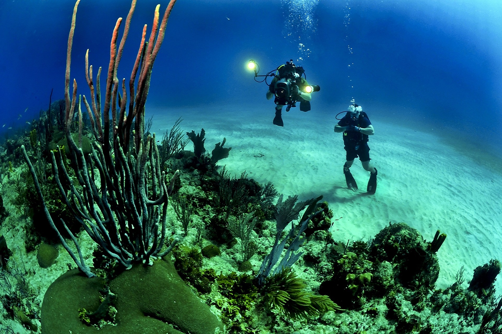
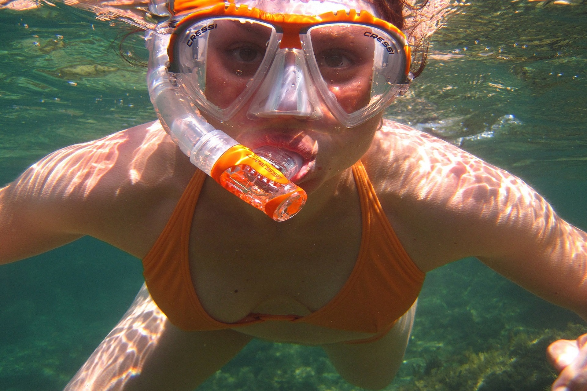
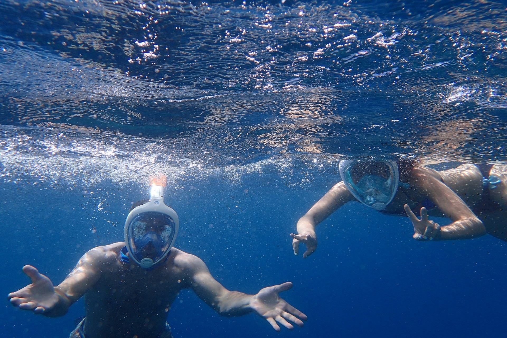
The Adriatic is one of the richest fishing grounds in the Mediterranean, and the waters around Podgora are no exception. Cast from the rocks along the shore or join a local boat excursion for deep-sea fishing further out. Whether you're an experienced angler or trying it for the first time, the clear coastal waters offer a peaceful and rewarding way to spend the day.
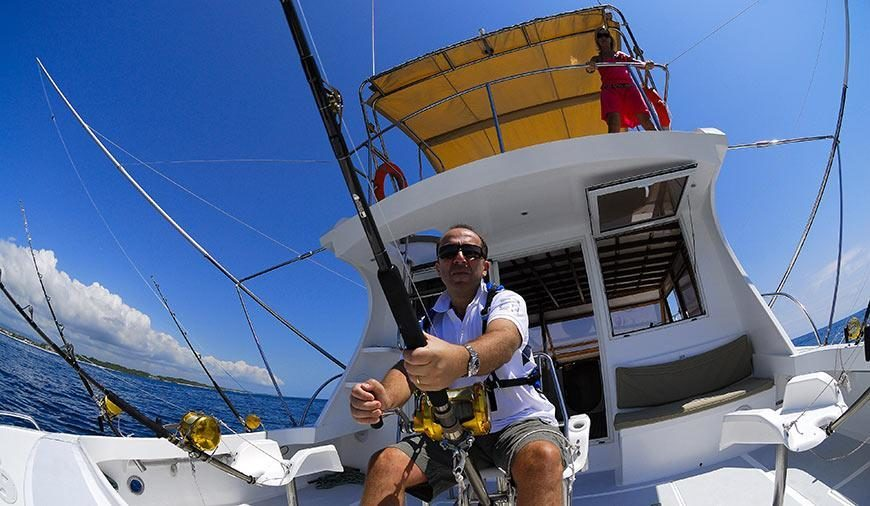
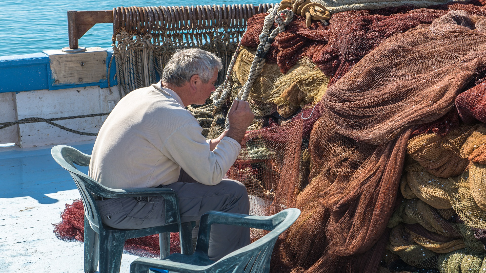
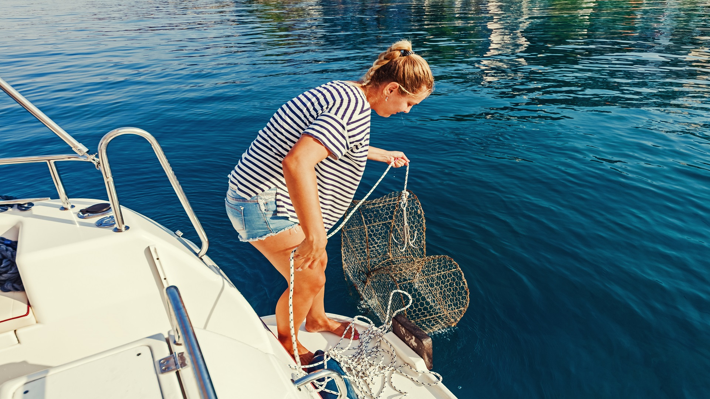
For those who like their thrills on the surface, the Adriatic delivers. Ride the banana boat, fly above the sea on a parasail, bounce across the waves on a tube, or feel the rush of a jet ski. These water toys are available locally at the beach and are perfect for families, groups of friends, or anyone who just wants to have fun in the sun.
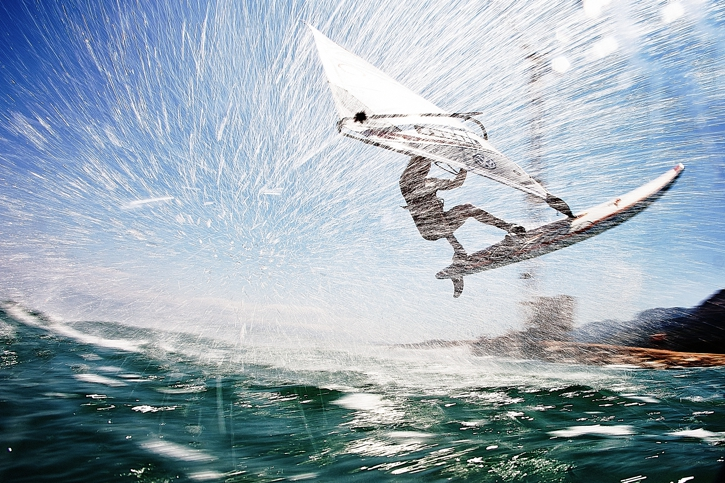
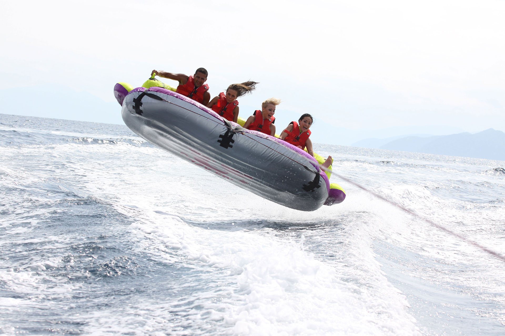
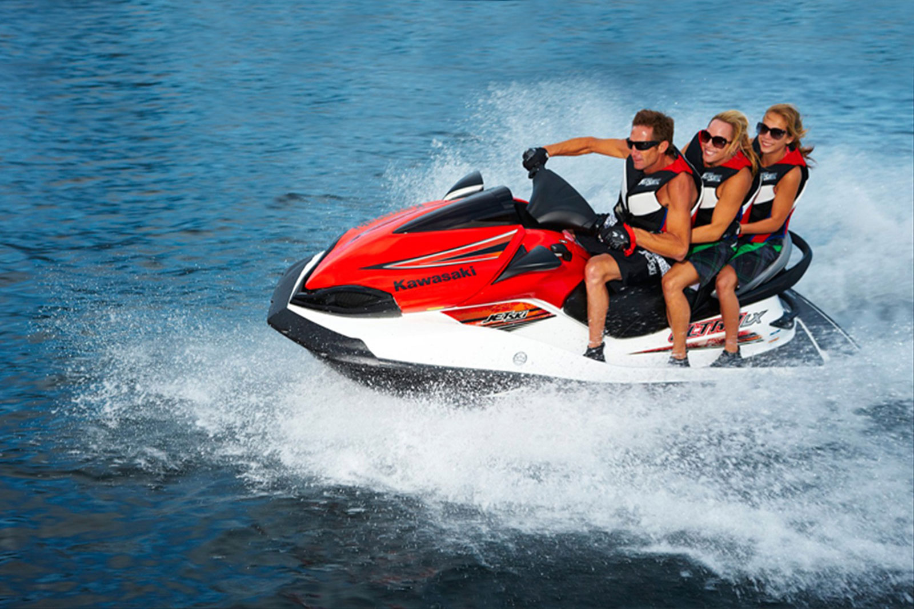
The Biokovo massif rising behind the coast opens up a world of adventure. Hike or trek along well-marked trails with panoramic views over the Adriatic, test yourself on climbing routes, or soar above it all on a tandem paragliding flight. For the ultimate adrenaline rush, the local zipline offers breathtaking views as you fly between the mountains and the sea. There is no shortage of ways to explore the wild side of the Makarska Riviera.
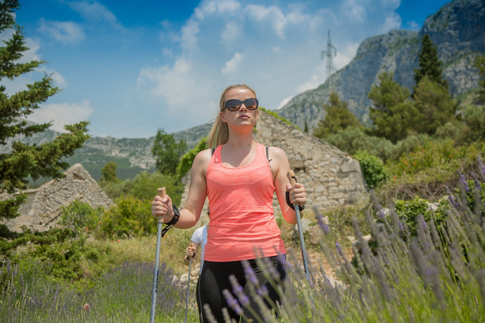
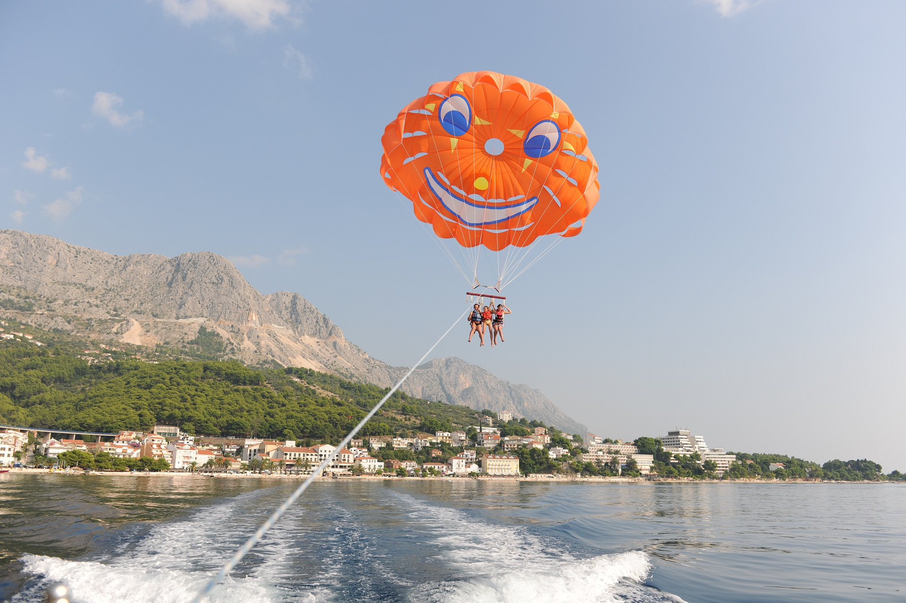
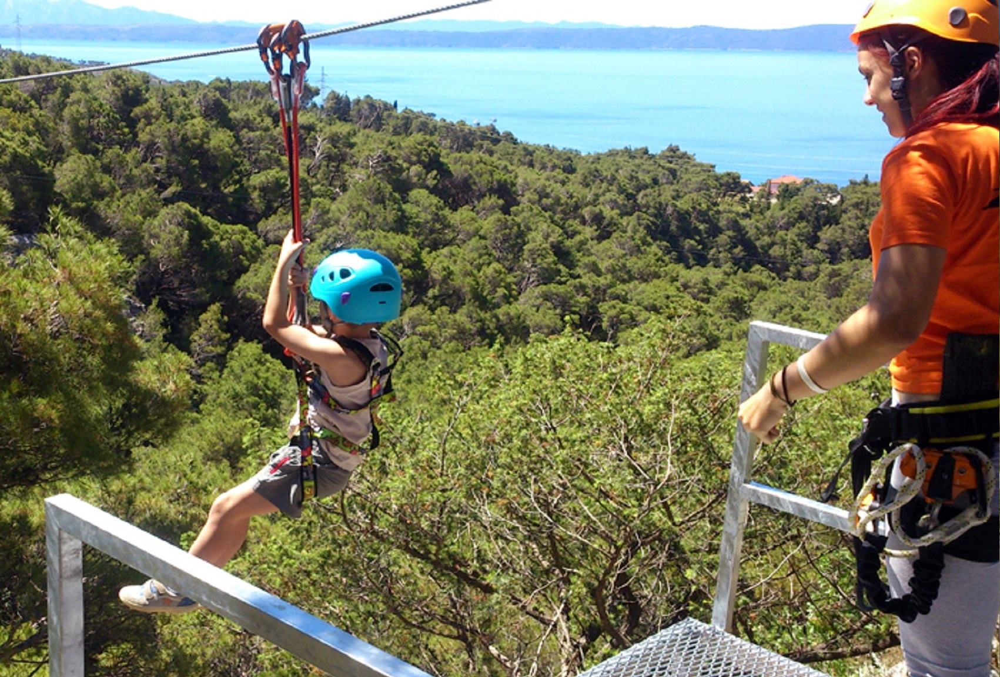
Reserve your pitch or mobile home and arrive to a summer full of sun, sea, and adventure on the Makarska Riviera.